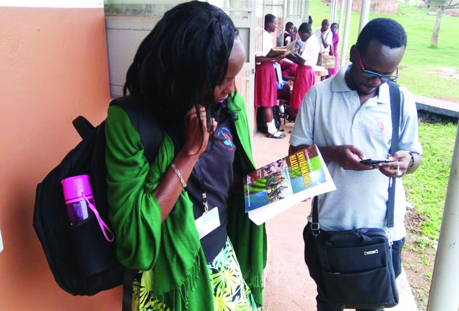

Two Hands One Life (THOL) is a non-profit organization which was established in 2017 by a group of three women namely Jacqueline Nnalunkuuma Muwanga as the Executive Director, Nansukusa Agatha and Ritah Amenyo. The three were later joined by two gentlemen namely Kakande Michael and John Bogere who had similar vision. THOL was established on grounds of love, charity and passion.
Is to see Lasting Change for children is realized through networking collaborative action amongst Communities and other stakeholders.
Is that Children are safe, well and fulfilling their God-given potential
In pursuing our vision and mission over the next five years, we aim to double our impact. Our goal for 2025s is: 200,000 children in Uganda to be safe, well and fulfilling their God-given potential.
To help us achieve our goal, we are concentrating on three priorities between now and 2020:Children in Safe Spaces | Children in Education | Children in Families
We are dependent on God in all we are and do. We seek to glorify Jesus and not ourselves. We seek to build his Kingdom values. Therefore, we are committed to a radical, God-centered lifestyle, to prayer, and to actions that are consistent with the Bible’s teaching.
We value collaborative action, especially by the Christian community in all its different expressions, to positively impact children at risk. We mobilize the Christian community, and encourage networking and partnerships at local and international level to maximize the impact of resources on the needs of children at risk.
We value the wellbeing of all children and we recognize the power of God to transform their lives and their communities. Therefore we strive with compassion to influence the lives of children for good, to achieve justice for them and to restore individual wellbeing, self-worth and joy, and to have fun, especially for those at risk. We do this in the knowledge that it is the transforming love of God that ultimately meets their needs.
We value the call God has given us to be a part of His Kingdom values here on earth in working with and for children. Therefore we are committed to seeing the church in Kampala working together for the sake of the individual child and for the glory of God.
We value excellence, diligence, integrity, professionalism and creativity in caring for children. Two Hands One Life believes in providing holistic, wide-reaching care to the community, especially those who are underserved. Two Hands One Life attempts to implement change by influencing the behavior of the members of the community